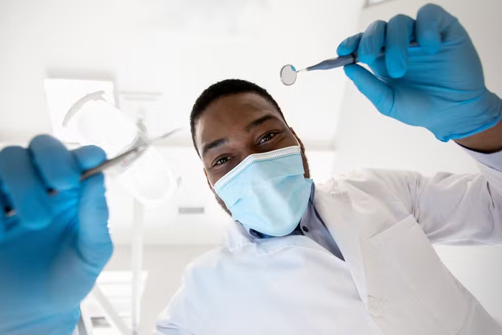
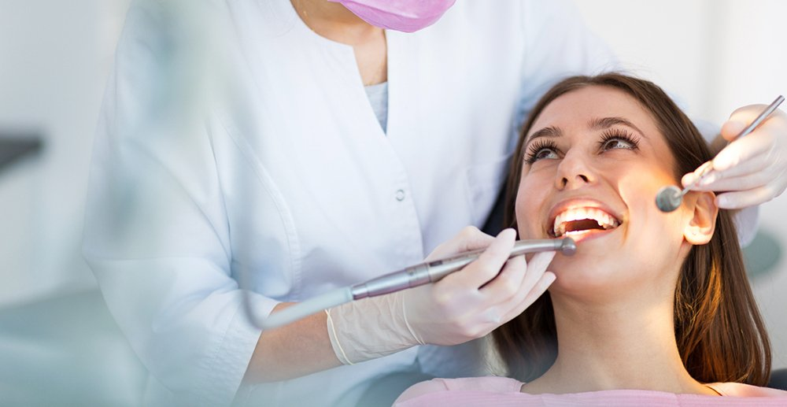
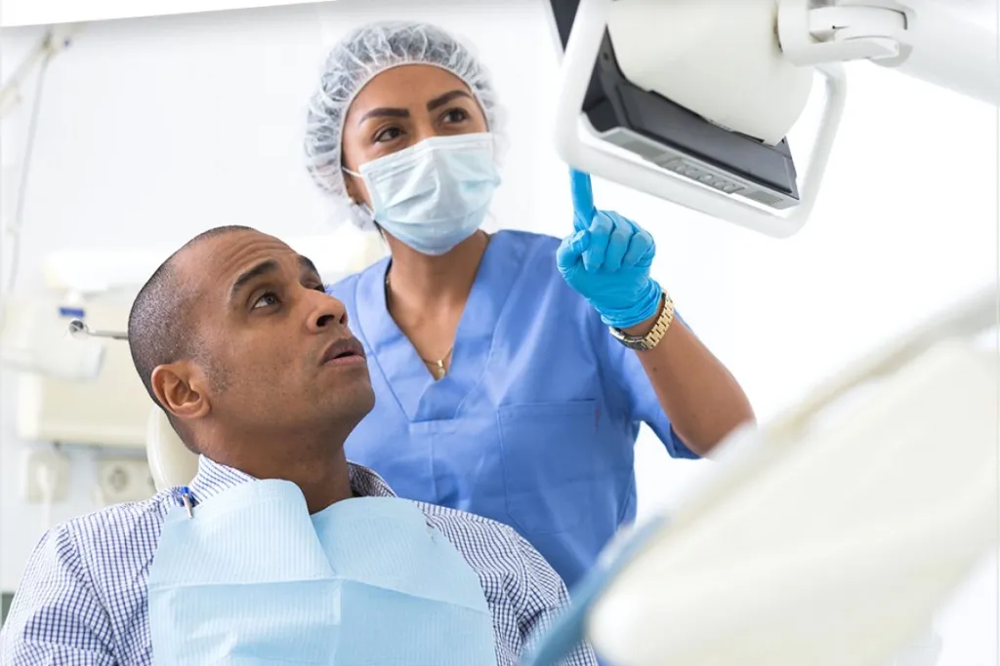
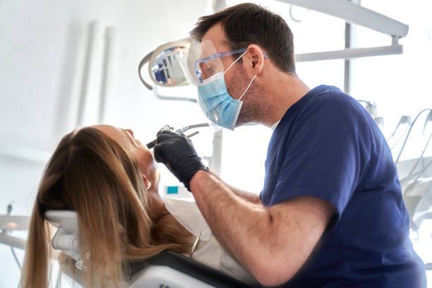
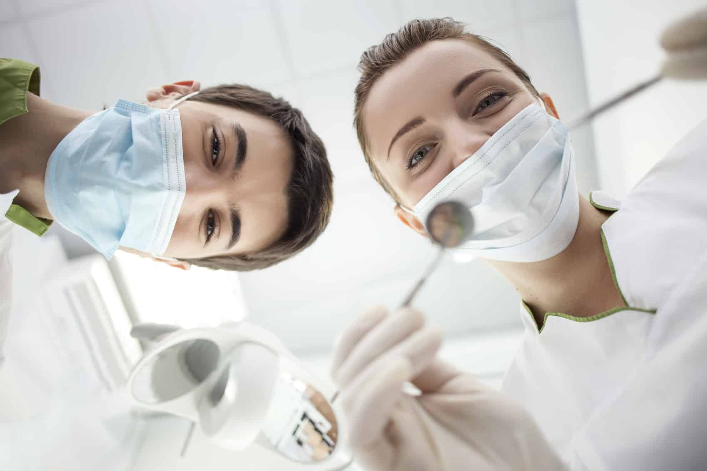

Ortodontia Invisível
Alinhadores transparentes de alta tecnologia para um tratamento discreto, rápido e sem braquetes metálicos.
Na Sorriso Metálico, aliamos alta precisão técnica e tecnologia odontológica de ponta sob a liderança rigorosa do Dr. Roberto, oferecendo um atendimento ágil, eficiente e exclusivo para quem não abre mão da excelência no cuidado com o sorriso.
Conheça nossos

Alinhadores transparentes de alta tecnologia para um tratamento discreto, rápido e sem braquetes metálicos.

Procedimento de alta precisão para a remoção de manchas e um sorriso visivelmente mais branco em poucas sessões.

Lâminas ultra-finas de porcelana personalizadas para corrigir a cor, formato e alinhamento dos seus dentes.

Reabilitação oral com cirurgia guiada digitalmente, garantindo máxima precisão, segurança e rápida recuperação.

Avaliação completa com câmara intraoral e profilaxia ultrassónica para prevenção de cáritas e cálculo dental.

Procedimentos estéticos de alta performance para alinhar a simetria do sorriso com as linhas do rosto.
| ID | Procedimento | Duração média | Valor Estimado |
|---|---|---|---|
| 01 | Consulta e Check-up Digital | 45 min | R$ 250,00 |
| 02 | Limpeza Ultrassónica e Profilaxia | 1 hora | R$ 350,00 |
| 03 | Clareamento Dental a Laser | 1h30 min | R$ 1.200,00 |
| 04 | Manutenção de Aparelho Ortodôntico | 30 min | R$ 300,00 |
| 05 | Tratamento de Canal (Endodontia) | 2 horas | R$ 950,00 |
| 06 | Aplicação de Lente de Contato (por dente) | 2 horas | R$ 2.500,00 |